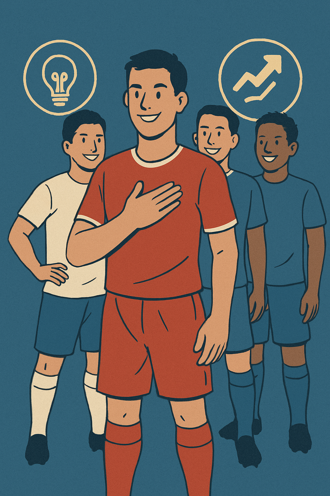
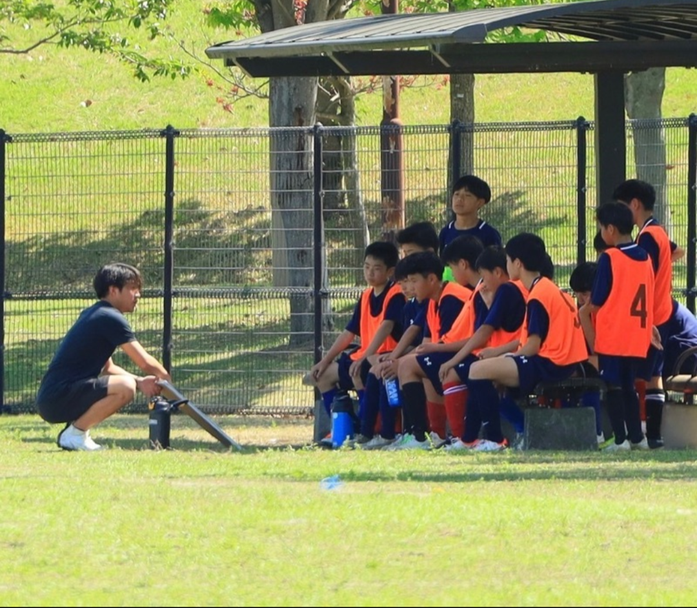

クラブ紹介
クラブ概要
Valerosso Fukuokaは福岡を代表するクラブを目指し、サッカーを通して「社会性」「人間性」そして好きなものへ本気で向き合う「心構え」を持ち合わせた選手育成を軸に指導していきます。
私たちは、サッカーを通じて技術の向上はもちろん、礼儀、協調性、自立心といった人間的な成長を重視し、将来社会で活躍できる人材の育成を目指しています。
| クラブ名 | Valerosso Fukuoka (ヴァレロッソ フクオカ) |
|---|---|
| 設立 | 2024年 |
| 対象 | 中学生・高校生 |
| 活動拠点 | 城島ふれあい広場・筑後広域公園人工芝球技場 |
| 連絡先 | TEL: 080-7227-0457（中山） E-MAIL: valerosso.f@gmail.com |
指導方針
当クラブでは、以下の3つの柱を大切に指導を行っています。

技術力向上
個々のスキルアップとチーム戦術の理解を深め、全国で活躍できる選手を育成します。基礎技術の反復練習を徹底し、応用力を養います。

人間力育成
サッカーはチームスポーツです。仲間を尊重し、協力することの大切さを学びます。挨拶、時間管理、整理整頓など、社会性の基礎を身につけます。
健全な心身
スポーツ選手として、健康な体づくりは不可欠です。怪我の予防、適切な栄養摂取、十分な休養など、コンディショニングの重要性を指導します。
スタッフ紹介

監督：中山 ひろやす
一生懸命頑張ります。

コーチ：氏名 B
経歴や指導への想いなどをここに記載します。